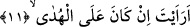
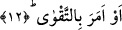

10. Namaz kılarken bir kulu.
Rivâyete göre Ebû Cehil Kureyş’in ileri gelenlerinin bulunduğu bir mecliste şöyle
der: “Muhammed’i namaz kılarken görürsem, yemin ediyorum boynuna ayaklarımla
basacağım.”[169]
Tekmile’de bu âyet-i kerime şöyle tefsir olunuyor: Muhammed’i namaz kılmaktan
alakoyanı ve başına taş atmayı düşünen kimseyi gördün mü? Bir gün Ebû Cehil
Peygamber Efendimiz’i (s.a.) öğle namazı kılarken görür ve yanına gelir, sonra birden
bire gerisin geriye döner. Kendisine, “neyin var?” diye sorduklarında şöyle cevap verir:
“Benimle onun arasında ateşten bir çukur, korkunç bir şey ve kanatlar var” İşte bu
ifâde üzerine bu âyet nâzil olur.
Ebû Cehil’in ifâdesindeki “kanatlar”dan maksad meleklerin kanatlarıdır. O lânetli
adam, meleklerin kanatlarını görür; ancak yanında bulunanlar onları görmezler.
Peygamber (s.a.) Efendimiz bu olay üzerine şöyle buyurur: “Nefsim kudret elinde olan
Allah’a yemin ederim ki, Ebû Cehil bana biraz daha yaklaşmış olsaydı melekler onu
organlarını ayırarak lime lime edip parçalayacaklardı.” Ebû Cehil câhiliye
döneminde “Ebu’l-Hakem” diye lakaplanırdı. Çünkü câhiliye arapları onun hikmet
sâhibi alim ve bilge bir kişi olduğunu zannederlerdi. Daha sonra İslâm geldikten sonra
“Ebû Cehil” şeklinde lakaplanmıştır.
Fakir (Bursevî)’in kanâatine göre Peygamber Efendimiz (s.a.) duâsında şöyle derdi:
“Allah’ım İslâm’ı Ebû Cehil veya Ömer ile aziz kıl” [170] Allah Teâlâ İslâm’ı Hz.
Ömer’le aziz kılıp güçlendirince bu ifâde gösterdi ki Hz. Ömer Kureyş’in en kutlu
kişisidir. Nitekim Ebû Cehil de Kureyş’in en bedbahtı idi. Nitekim bir söz vardır:
Herşey kendi zıttıyla ortaya çıkar.”
11. Ne dersin, o (Peygamber) doğru yolda ise
Âyetteki “eraeyte” ifâdesinin anlamı, “gördün mü?” demektir. Buradaki görme kalbî,
görmedir, mânâsı ise: “Bana haber ver, bu kulu ibâdetten alakoyan kimse, Allah’a
ibâdetten alakonulduğu noktada doğru yolda ise...”
12. Yahut takvâyı emrediyorsa!
“Yahut” bâtıl zannınca putlara ibâdeti emir konusunda “takvâyı emrediyorsa.” Bu
şart cümlesi mahzuf olan cevabı ile birlikte görme fiilinin ikinci mef’ûlü yerine